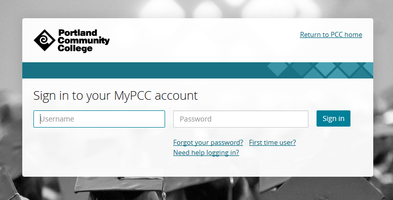
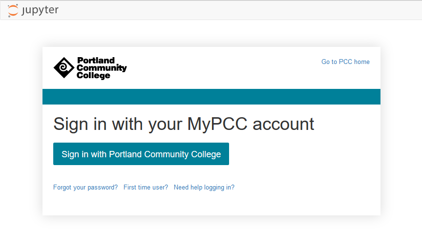

Custom Login Page
The JupyterHub login page looks like this:
But our college login page looks like this:

For users to feel comfortable with logging into the JupyterHub server, we'll make the JupyterHub login page look more like the college login page.
Create a templates directory and populate it with Jinja templates
This was a time consuming and fussy task. It involved a lot of messing around with css and html.
First, a set of custom jinja templates need to be created. When JupyterHub runs, there is a directory of jinja templates that build the html users see when they browse to the login page. These jinga templates are burried deep in the JupyterHub package code. For my JupyterHub installation on the server, I found the jinja template files in the /opt/aminconda3/envs/pkgs/jupyterhub/share/jupyterhub/templates/ directory. If you aren't using a virtual environment, the JupyterHub package directory name will likey be different:
/opt/anaconda3/envs/pkgs/jupyterhub/share/jupyterhub/templates/
├── 404.html
├── admin.html
├── error.html
├── home.html
├── login.html
├── logout.html
├── page.html
├── spawn.html
├── spawn_pending.html
└── token.html
Now we need to copy these templates into a new /etc/jupyterhub/templates directory. Once copied, we can modify the templates and create a new JupyterHub login page. login.html file we'll customize.
$ cd /opt/miniconda3/envs/jupyterhubenv/pkgs/jupyterhub/share/jupyter/hub/
$ ls
$ cp -R templates /etc/jupyterhub/templates/
$ cd /etc/jupyterhub/templates
$ ls
Modify login.html
Open up the login.html file and modify it with any html that you want to show up when a user goes to the JupyterHub site.
I messed around for WAY to long trying to get my custom login page to look like the college login page. An important piece of html that needs to stay in the login.html file is the <a> tag that links to the authentication url. The complete tag is detailed below
<!–– login.html ––>
<a role="button" class="btn btn-jupyter btn-lg" href="/hub/oauth_login?next=">
Sign in with Portland Community College
</a>
I also kept in the jinga tag at the top of the file that brings in all of the formatting from login.html's parent template page.html
<!–– login.html ––>
{% extends "page.html" %}
All the changes I made to the login template were inside the "login" block of login.html. You can find my complete login.html file here
{% block login %}
<!–– make changes here ––>
{% endblock login %}
Modify jupyterhub_config.py
Now we need to modify the jupyterhub_config.py file so that our new set of custom jinja templates are used instead of the default jinja templates.
A problem I initially had was I set the directory path of the custom templates as templates and the login page didn't work as expected. When I changed the directory path to templates/ the problem was resolved.
# /etc/jupyterhub/jupyterhub_config.py
...
# sets a custom html template at the login screen.
c.JupyterHub.template_paths = ['/etc/jupyterhub/templates/']
...
Style the login page with css
Finally, the style.min.css file needs to be modified so that the login page styling looks a little more like the college login page.
This is another thing I messed around with for a long time, a WAY to long time. I couldn't figure out a way to get JupyterHub to use a custom .css file. I tried creating a .css file in the new custom templates directory, but JupyterHub wouldn't copy it as a static asset when the server launched. I also tried putting a separate .css file deep inside of the JupyterHub package code. When the server ran, it seemed to copy the custom .css file (I could see the custom .css file using chrome's inspect element tool). But for some reason the custom .css file would be blank when server serve was running, even though the custom .css file contained a whole bunch of css code when viewed deep in the JupyterHub package code.
The solution I finally got to work was modifying the style.min.css file itself that JupyterHub uses. This file is buried deep in the JupyterHub package code:
/opt/miniconda3/envs/jupyterhubenv/pkgs/jupyterhub/share/jupyter/hub/static/css/
├── style.min.css
└── style.min.css.map
Modify the style.min.css file to include all the custom css styling desired (find my complete css file here)
Restart JupyterHub
With changes to the login.html file and style.min.css file complete, we can restart JupyterHub and view the changes rendered on the login page.
$ sudo systemctl stop jupyterhub
$ sudo systemctl start jupyterhub
$ sudo systemctl status jupyterhub
# [Ctrl]-[c] to exit
Below is the look of the modified login page in all it's custom html and css glory:
